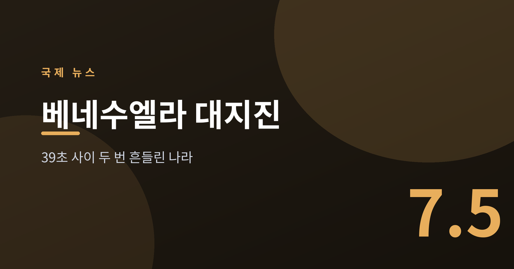
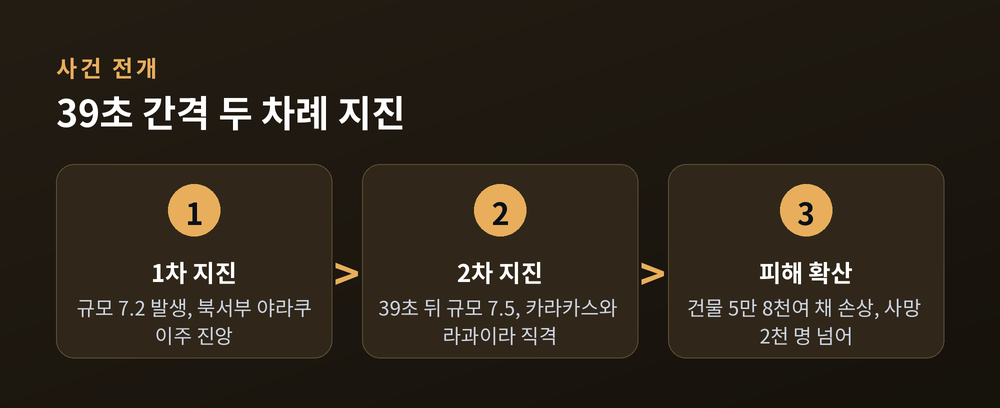
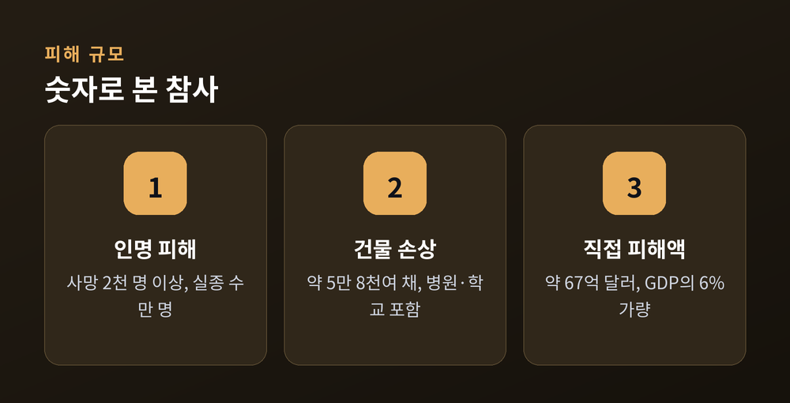
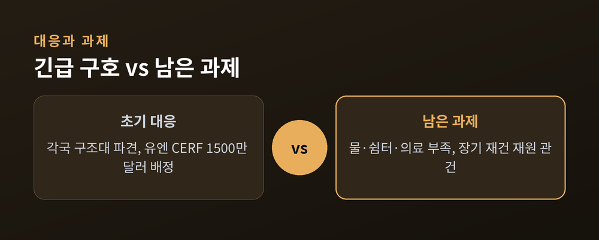

39초 사이 두 번 흔들린 나라

이번 글에서는 6월 24일 베네수엘라 북서부를 강타한 대지진을 정리해 보겠습니다. 규모 7.2와 7.5의 지진이 채 1분도 안 되는 사이에 연달아 일어났습니다. 무슨 일이 벌어졌고, 왜 피해가 이토록 컸으며, 앞으로 무엇이 남았는지 차분히 짚어보겠습니다.
미국 지질조사국(USGS)에 따르면 6월 24일 규모 7.2 지진이 발생한 뒤 약 39초 만에 규모 7.5의 더 큰 지진이 이어졌습니다. 진앙은 수도 카라카스 서쪽, 야라쿠이주 일대였습니다.
피해는 북서부 해안 지역에 집중됐습니다. 카라카스와 항구도시 라과이라가 특히 큰 타격을 입었습니다. 나사(NASA)의 위성 분석은 약 5만 8천여 채의 건물이 손상된 것으로 추정했습니다. 병원과 학교, 상수도 시설도 다수 무너졌습니다.
인명 피해 집계는 구조가 이어지며 계속 늘었습니다. 초기 수백 명이던 사망자는 7월 초 2천 명을 넘어섰고, 실종자는 여전히 수만 명으로 보고됐습니다. 베네수엘라 정부는 국가 애도 기간을 선포했습니다.

같은 규모라도 피해는 나라마다 다릅니다. 이번 참사가 유독 컸던 데에는 몇 가지 이유가 겹칩니다.
첫째, 두 지진이 연달아 왔습니다. 첫 흔들림에 금이 간 건물이 39초 뒤 더 강한 진동에 무너졌습니다. 둘째, 인구가 밀집한 도시 지역이 직격을 받았습니다. 셋째, 오래된 건물과 취약한 내진 설계가 피해를 키웠습니다.
여기에 베네수엘라가 오랜 경제난을 겪어 왔다는 점도 무겁게 작용합니다. 유엔개발계획(UNDP)은 직접 피해액을 약 67억 달러, 국내총생산의 6%가량으로 추산했습니다. 이미 취약했던 나라에 재난이 겹친 셈입니다.

재난 앞에서 국제사회의 손길이 이어졌습니다. 브라질, 콜롬비아, 멕시코, 캐나다, 쿠바, 미국 등 아메리카 여러 나라가 구조대와 구호 물자를 보냈습니다.
유엔도 나섰습니다. 긴급구호조정관은 중앙긴급대응기금(CERF)에서 1천 5백만 달러를 배정했습니다. 국제적십자연맹은 250만 달러를 조기 지원했습니다. 유니세프는 어린이 구호에만 5천 2백만 달러가 필요하다고 밝혔습니다.
다만 현장의 목소리는 다릅니다. 구호 기관들은 필요가 "치솟고 있다"고 전했습니다. 물과 쉼터, 의료가 여전히 부족합니다. 정치적으로 고립돼 온 베네수엘라의 사정도 지원 조율을 복잡하게 만드는 요인입니다.

당장은 실종자 수색과 생존자 구호가 급합니다. 그러나 진짜 시험은 그다음입니다. 무너진 도시를 다시 세우는 일은 몇 년이 걸리는 긴 과정입니다.
재건에는 막대한 재원이 듭니다. 이미 경제가 어려운 나라가 홀로 감당하기는 벅찹니다. 국제사회의 지원이 응급 국면을 넘어 얼마나 이어질지가 관건입니다. 정치적 셈법을 넘어 인도적 협력이 지속될 수 있느냐가 회복의 속도를 가를 것입니다.
한 나라가 39초 사이에 두 번 흔들렸습니다. 무너지는 것은 순식간이지만, 다시 세우는 데는 오랜 시간이 필요합니다.
— 재난은 지나가도, 회복은 이제부터입니다.
숫자 뒤에 놓인 삶들이, 오래 기억되기를 바랍니다.